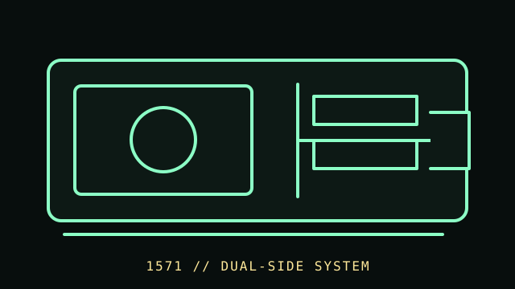

[ FLOPPY DRIVES // IDENTIFIED MODEL ]
Commodore 1571 Disk Drive
The Commodore 1571 is an external 5.25-inch disk drive for Commodore systems. It adds a distinct two-sided operating mode and firmware environment; it is not simply a 1541 mechanism with a PC interface.

MODEL IDENTIFICATION: Commodore 1571 family; record the rear label, drive/board revision, ROM revision, and power configuration. The record distinguishes source-documented facts from model/revision-dependent behavior; it is not a compatibility guarantee.
Recorded specifications
| Catalog model | Commodore 1571 Disk Drive |
|---|---|
| Device type | External 5.25-inch two-sided-capable drive with on-drive controller |
| Interface / connector | Commodore serial IEC bus; drive-side formatting and controller behavior are managed by Commodore DOS/host software. |
| Media / formats | 5.25-inch magnetic disks; two-sided operation and supported formats depend on drive mode, host, DOS, and software. No universal capacity is stated. |
| Revision caution | Confirm the complete model designation, nameplate, connector, board/firmware revision, and service-manual edition. Related family names are not proof of interchangeable parts or host support. |
Host and controller compatibility
- Designed for Commodore systems using the IEC bus. C128-aware software can use 1571-specific facilities; compatibility behavior on other Commodore hosts may use a 1541-compatible mode.
- Use the 1571 guide and the host’s own technical reference to establish mode and software compatibility; do not assume that every 1541 program accesses both sides.
- 1570/1571 and board/ROM revisions are not interchangeable assumptions. Preserve the installed ROM and board identifiers in the record.
Safe preservation and cleaning
Disconnect power and IEC cables before inspection. Do not insert damaged or contaminated disks. Clean only according to the applicable service documentation; do not apply solvent to disk media or adjust heads without a documented alignment procedure.
For preservation, photograph labels and connector/board markings before service; document the host, controller, software, settings, and observed condition. Keep original media or raw captures intact and verify checksummed copies before making derivatives.
Manufacturer manuals & archival references
- Commodore 1571 Users Guide (252095-01, June 1985) — Zimmers.netPeriod manufacturer guide covering operation and supported Commodore configurations.
- Commodore 1571 Users Guide (252095-04, August 1985) — Zimmers.netA later documented manual revision; compare it with the hardware and ROM revision.
- Commodore 1570/1571 manual archive index — Zimmers.netArchived reference index for additional model-specific manuals.
Archive scans and project pages may cover a family or a particular revision. The full model/revision-specific manufacturer manual takes precedence. Capacity or recording mode is omitted where it cannot be tied to the cited model and format.